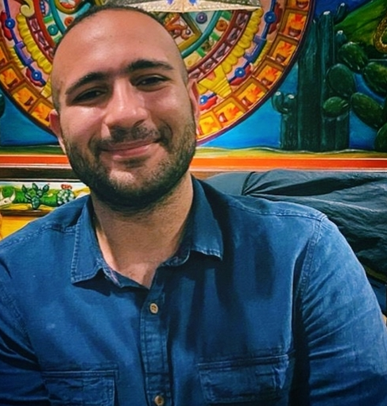
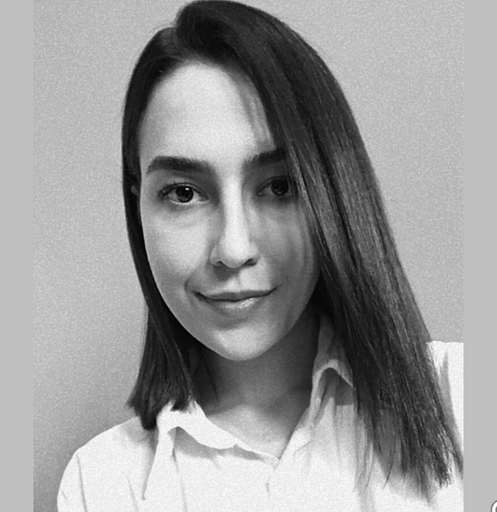
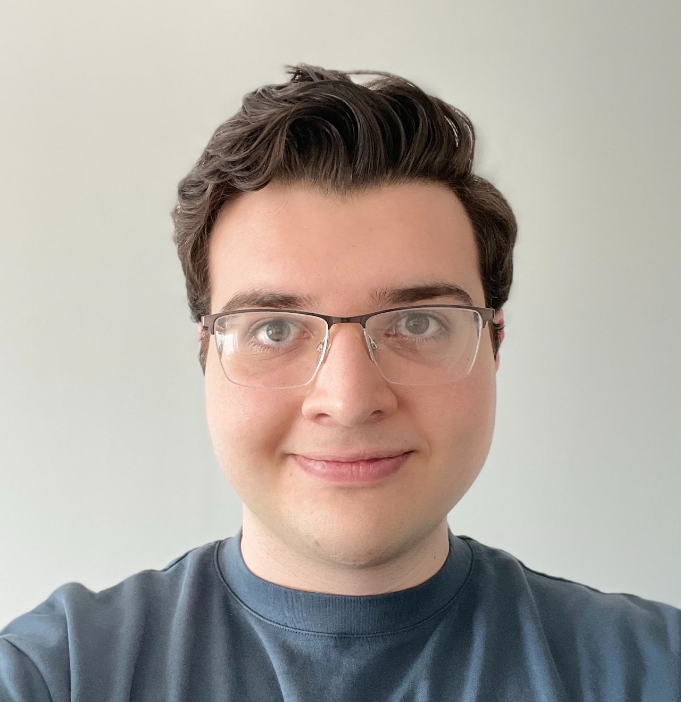
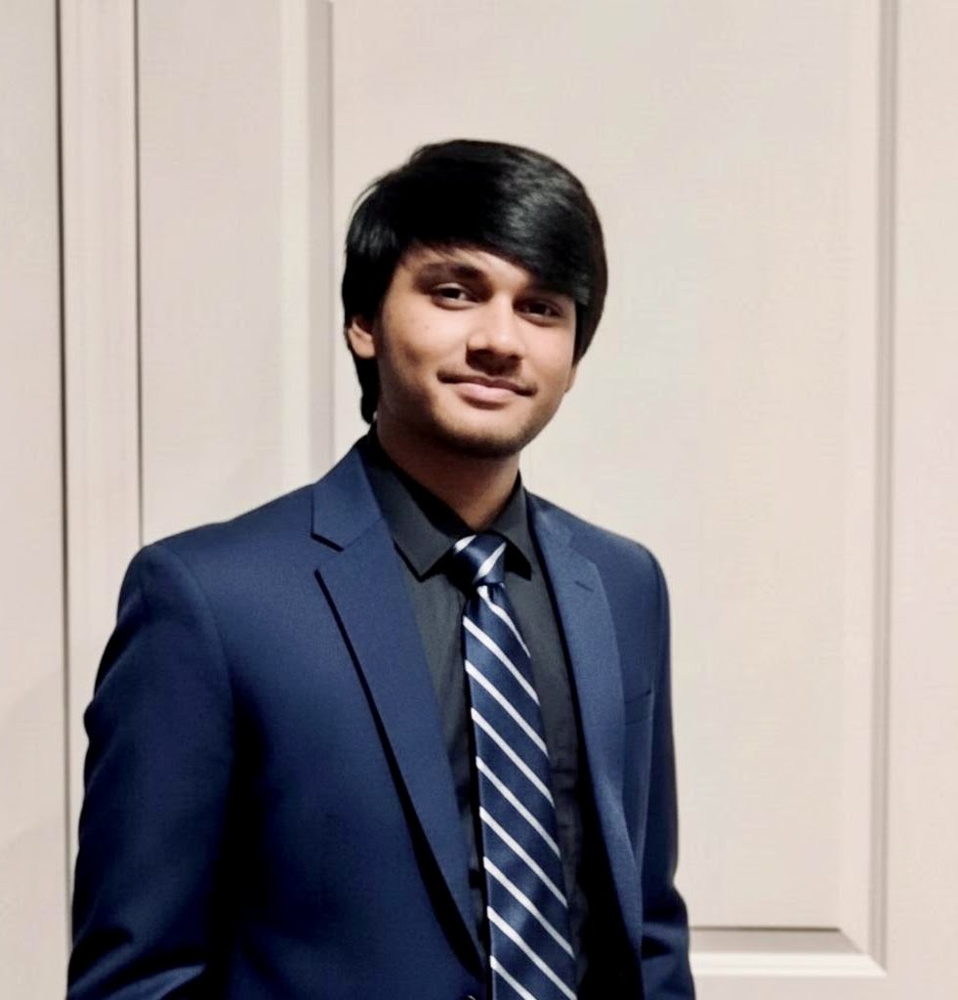
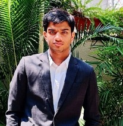
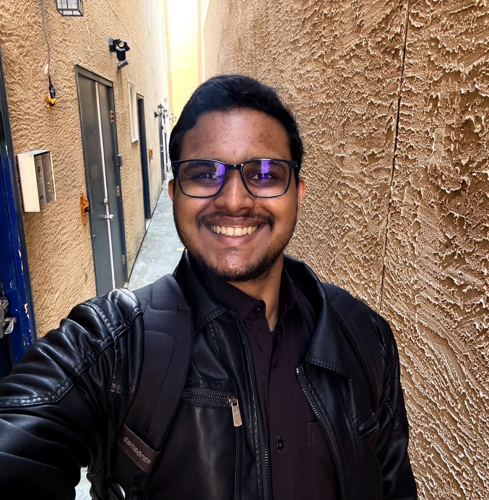
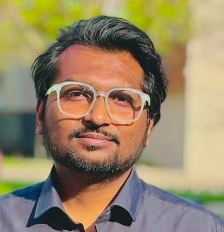

Director

Rezvaneh “Shadi” Rezapour
Founder & Director · Assistant Professor, Drexel University
NLP, computational social science, human-centered AI, NLP for social good, and social network analysis.
PhD students

Aria Pessianzadeh
PhD Student · Fall 2023–present
Trust in generative AI, cancer misinformation, controversial narratives, and epistemic welfare.

Elham Aghakhani
PhD Student · Winter 2024–present
Relational AI, mental health, therapeutic conversations, and LLMs.
AS
Angelica Shelman
PhD Student · Incoming Fall 2026
Interested in NLP and health.
Master's and undergrad researchers

Ali Ural
BSc Data Science · Co-op · 2026–present

Ansh Lad
BSc Data Science · Co-op · 2025–present

Karan Bindal
BSc Data Science · Co-op · 2025–present

Milan Varghese
MS AI/ML · Co-op · 2025–present

Yateen Sakhare
MS AI/ML · Co-op · 2025–present
Naima Sultana
MS Computer Science · 2025–present
Alumni
Layla Bouzoubaa, PhD '26First employment: Postdoctoral Fellow, substance use, stigma, social media, LLMs
Zarah MalikBSc Data Science · STAR Scholar · 2024
Muqi GuoMS Computer Science · Co-op · 2024
Subhrato SomMS Computer Science · 2025
Max SongMS Data Science · Co-op · 2023–2024
Samiha ZarinBSc Data Science · STAR Scholar · 2023
Minh TrinhBSc Data Science · STAR Scholar · 2023
Shailyshreyee TagoreEconomics & Data Science · 2025–2026
Kelsey ChongComputer Science · 2025–2026
Kristine YooComputer Science · 2025–2026
Chinomso Mishael ChukwumaMS AI/ML · 2025–2026
Nam HoangComputer Science Co-op · 2025
Princie ShahSTAR Scholar · 2025
Jesus RomeroSTAR Scholar · 2024
Trevor Canfor-DumasSTAR Scholar · 2024
Patricia TranSTAR Scholar · 2024
Anthony VaygenSTAR Scholar · 2024
Hoàng Minh Lê VũSTAR Scholar · 2024
Jasmine Ben-WhyteComputer Science Co-op · 2024
Haoran ZhaoSenior research project · 2023–2024
Geeta KukrejaMS Computer Science Co-op · 2023–2024
Janhi OngResearch student · 2025
Ximing ZhaoPhD research / independent study · 2023–2025
Mayinuzzaman ShawonPhD research / independent study · 2023–2025